Livability map · design redesign · mockup sitting, 19 November 2026
Every "Today" image is a real capture of the app on the fixture world (synthetic data laid over central Italy), taken at 390 by 844 and 1440 by 900 in both themes. Every "Proposed" frame is a drawing, built from the app's own tokens and ramps. Nothing in the app has changed. This page follows your light or dark setting, and so do the captures.
What I need from you: a yes, no or change on the four moves and two flags in Decisions. A one-line reply works, for example: "1 yes, 2 bands, 3 yes, 4 yes, invariant yes, links B".
Today the first thing a newcomer meets is a nine-colour key, and on real data it paints whole countries one colour because wellbeing is mostly a national figure. The proposal opens on climate exposure alone, with a five-step key that reads in one glance. Wellbeing moves one step in.
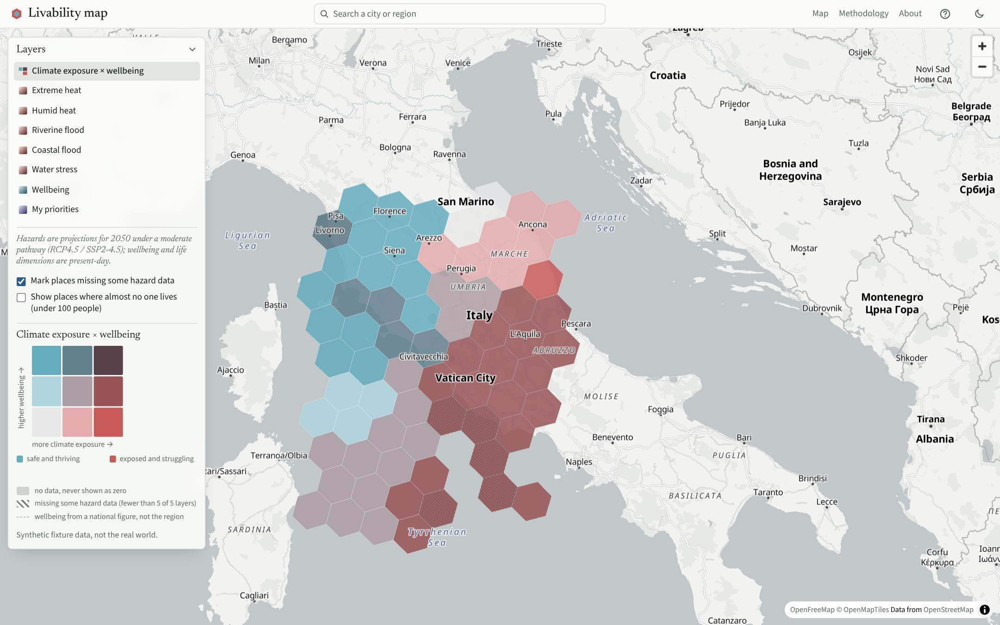
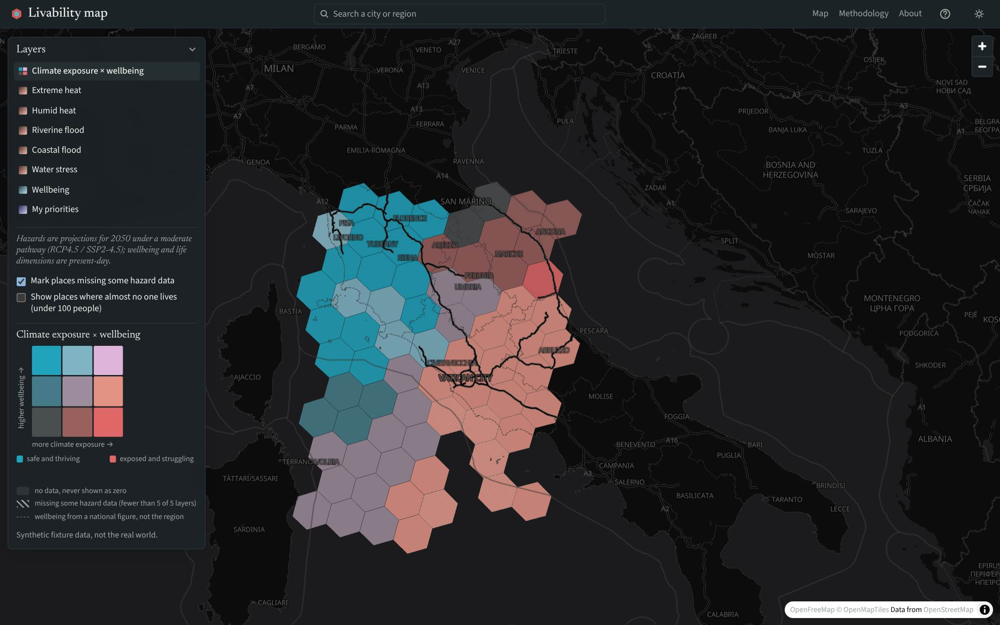
Hazards are projections for 2050 under a moderate pathway (RCP4.5 / SSP2-4.5). Synthetic fixture data, not the real world.
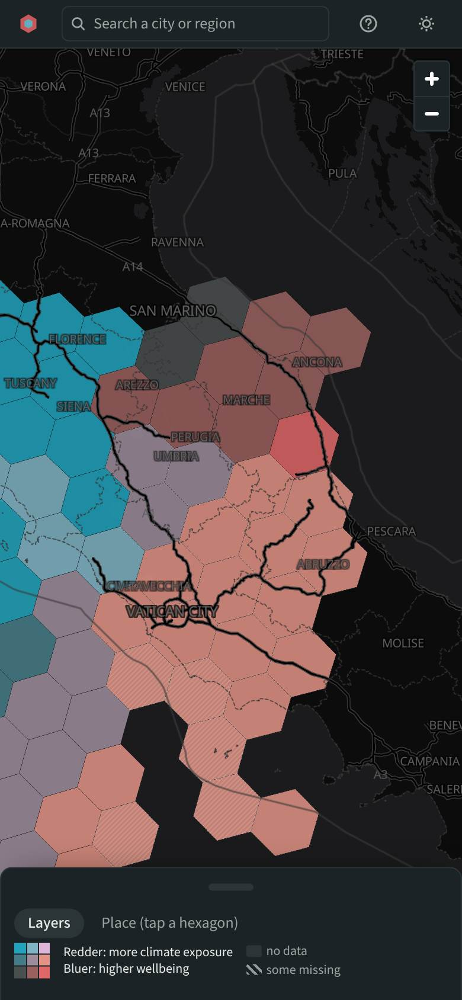
The left image is the September build on real data: Europe blue, Africa and the Middle East red, and the blue axis is a national figure almost everywhere. In the proposal a hex only takes a wellbeing colour where the figure is regional or finer. Where it is one number for a whole country, the hexes keep their exposure colour, the country gets a dashed outline, and the figure is stated once in words.
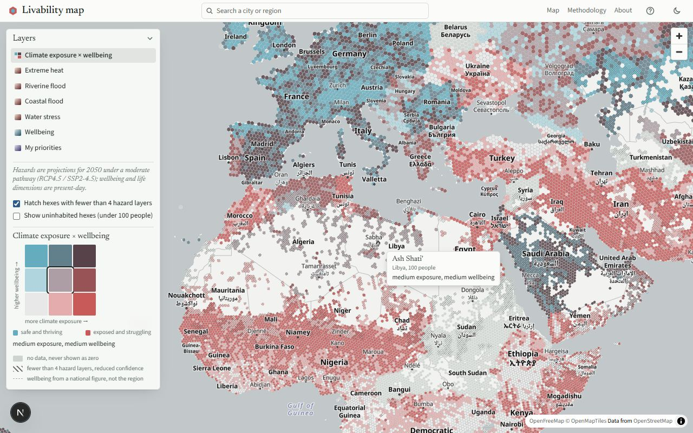
docs/screenshots/session-9. It predates humid heat; the pattern has not changed.My priorities is the thing no other map does, and today it is the eighth of eight layers (humid heat pushed it down one since the review). The intro card explains colours before the reader has a reason to care. The proposal asks one question first and makes the second door the product's own idea.
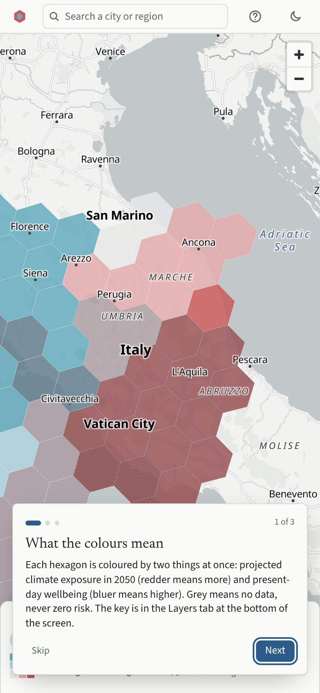
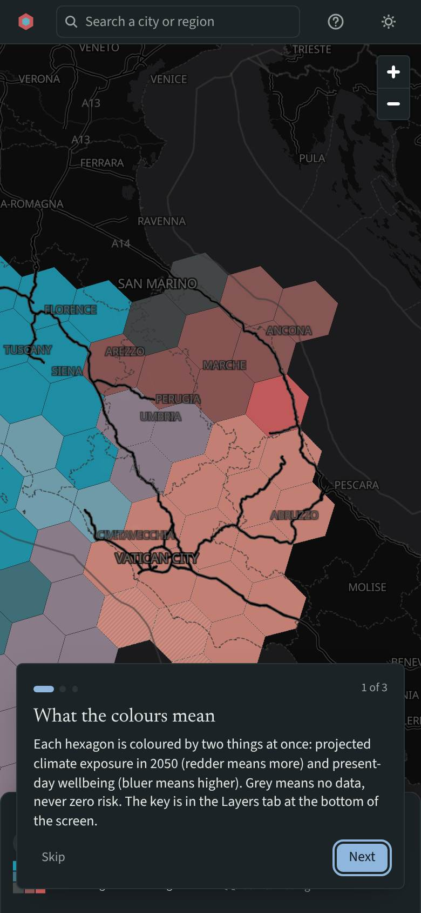
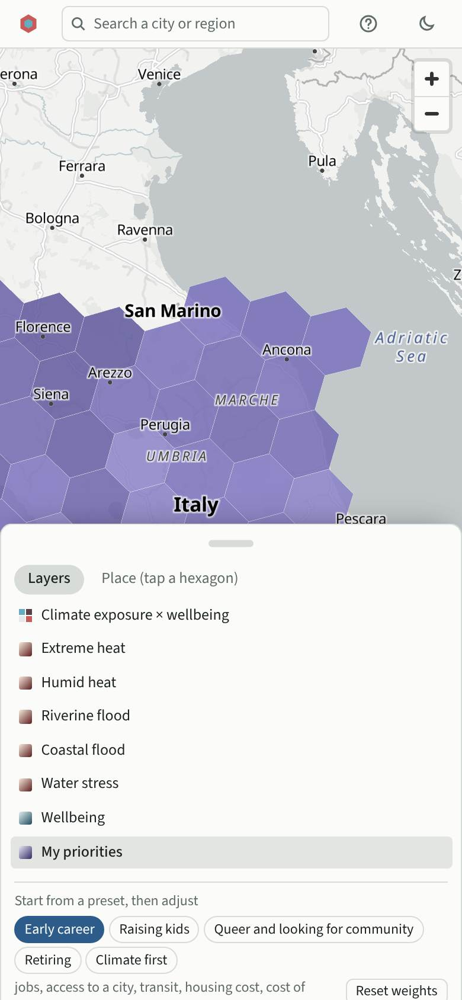
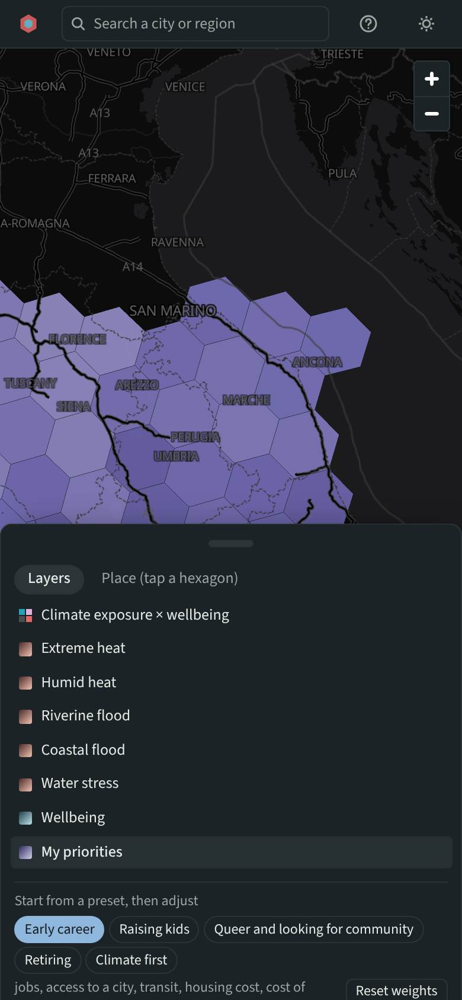
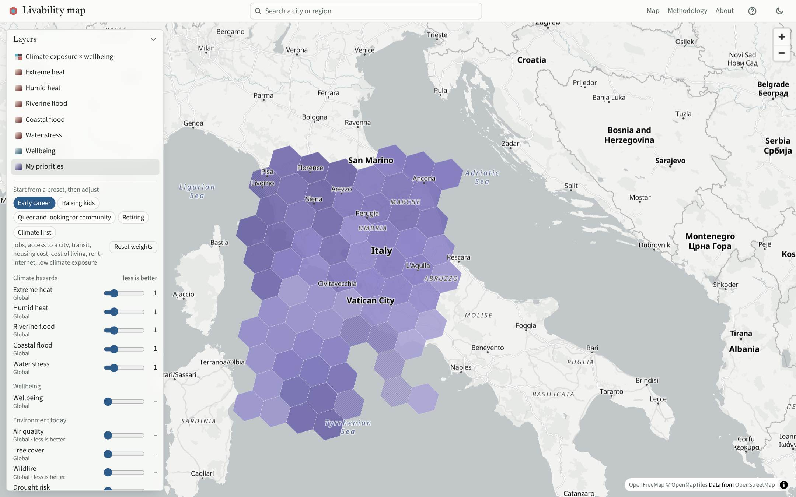
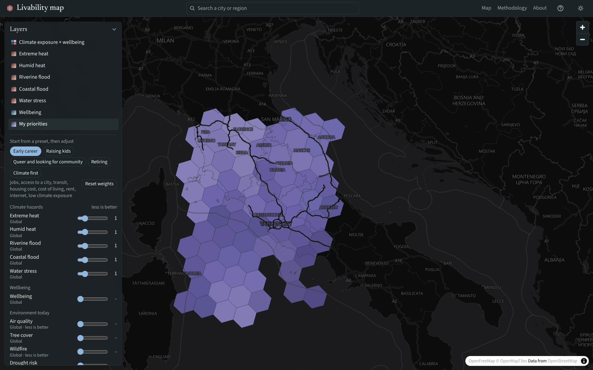
Today's panel opens with a good sentence and then becomes 30 or more rows. On a phone at half height, two hazards and their caveat paragraphs fill the whole sheet. Bar colour changes meaning row by row. The proposal puts three to five lines first, each one a finding with its number, and keeps every measure one tap away.
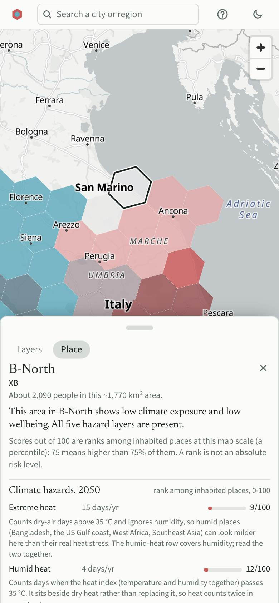
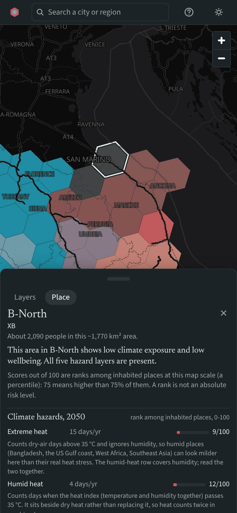
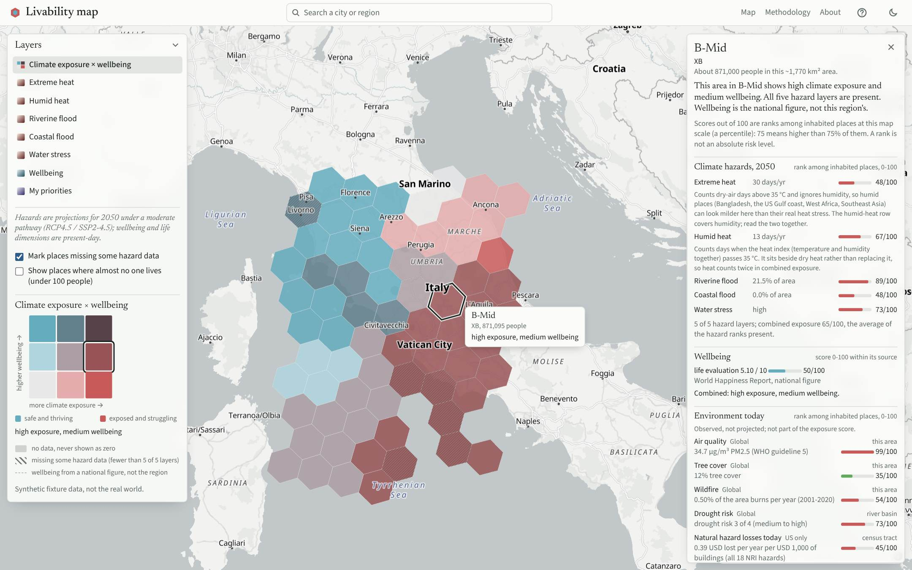
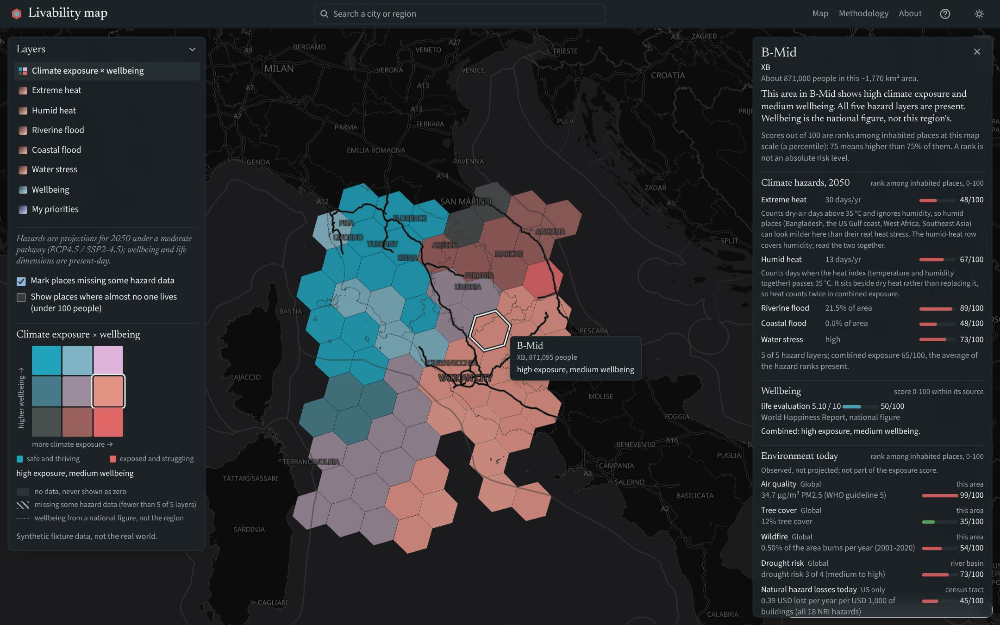
My priorities shows "matches your priorities 54/100". The review said this brushes the no-single-number rule. Reading the spec again, invariant 6 allows a single number as long as its weights are exposed as sliders, so the number is legal today. The question is whether "54" claims more precision than a weighted average of ranks deserves.
My recommendation is the left option: bands in words on the map key and in the summary, the per-dimension numbers kept, and the exact figure one tap away under "how this is worked out". Honest tradeoff: a band is still a single judgement, only a coarser one, and someone comparing two "partial fit" places loses the tiebreak.
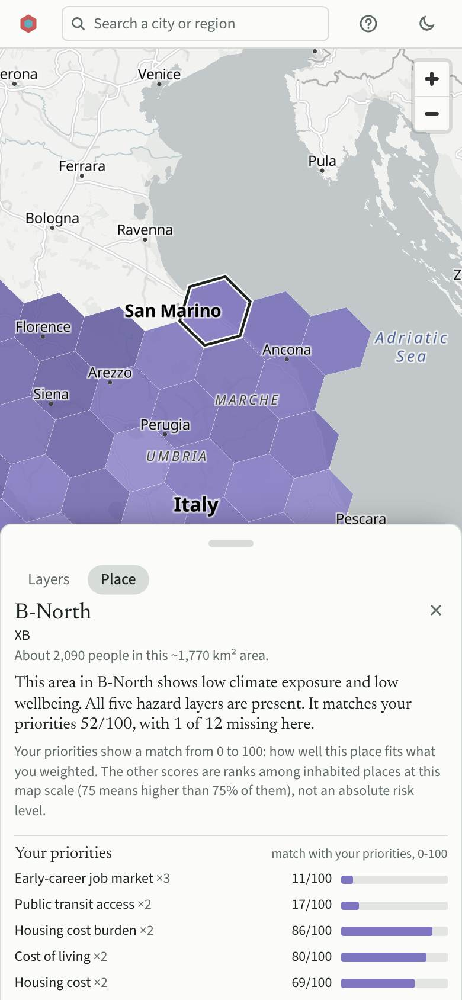
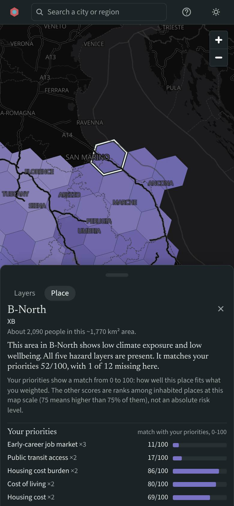
The Newsreader wordmark and the hairlines are the only atlas cues today. The basemap is the stock one, with labels in several scripts, and in dark its roads and borders draw over the hexes as heavy black lines. Proposed: a quiet ground with a handful of labels, hexes above every basemap line, docked panels with hairlines and no shadows, a plate title, a key and a scale bar.
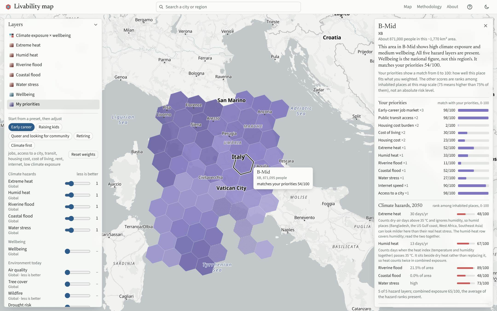
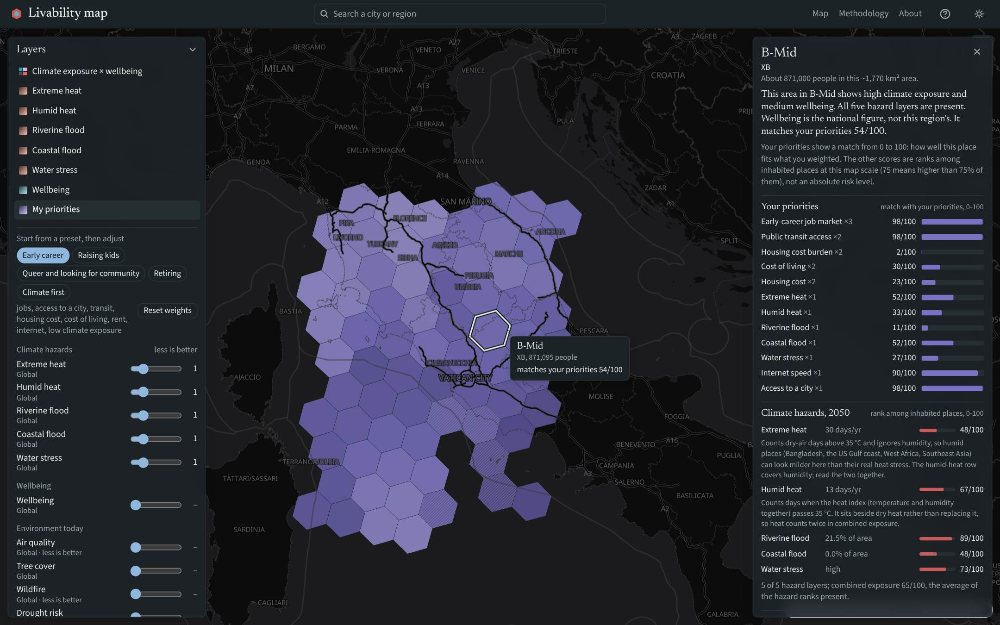
Hazards are projections for 2050 under a moderate pathway (RCP4.5 / SSP2-4.5); everything else is present-day.
The key across themes: the single-layer ramps already follow one rule in both themes (the end that stands out most from the ground is "more"). The bivariate grid follows it too, but its hues change identity: "both high" is dark plum in light and pale pink in dark, so what you learned in one theme does not carry over. With the bivariate grid off the default, the first key anyone sees is a plain ramp with the same words under it in both themes. The grid gets fixed with the palette tests in the build.
New, so there is no "today". A shared link opens the map with a card that says whose weights these are, what they were, and where the data comes from. It never lists places. It is the same URL state the app already writes, plus a title.
Hazards: 2050, moderate pathway (RCP4.5 / SSP2-4.5). Sources: World Bank CCKP, WRI Aqueduct, GHSL and 20 more, listed in full under Methodology. A view of one person's priorities, not a ranking of places.
Four moves from the plan, then two things the mockup turned up that need your call before any code. Sections B, E and F need no rule change, so they ride along unless you say otherwise.
view=wb links must keep working.Invariant 6 reads "The default view is a bivariate choropleth that needs no weighting." A single-variable default needs that sentence rewritten, along with §9.3 and §10. The intent survives (the default still needs no weighting). I recommend the change; it is yours to make.
Links only carry view= when it differs from the default, so today's bivariate links have none. But every link the app writes carries lat, lng and z.
view= still means bivariate; new links always write view=. Old links keep their meaning. About ten lines and three tests.The review was written from old screenshots. Running the app turned up these, none of them in the plan yet.
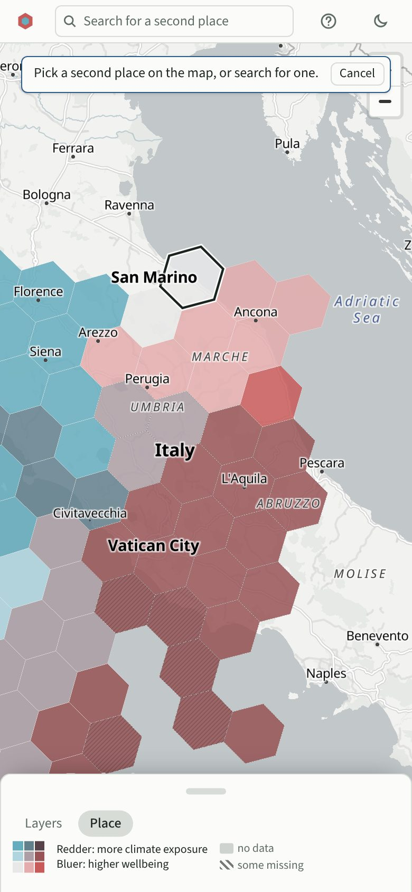
No decisions here. These come from the plan and go into the pull request as a checklist.
viewport-fit=cover, theme-color per scheme, notices off the zoom control, fallback basemap colours matched to the paper tone.<main> and a skip link, the legend no longer a live region, the standard focus ring on search.Eight screens, two sizes, two themes, taken 19 November 2026 from the fixture build. Files are in docs/mockups/2026-11-19-redesign/shots/.